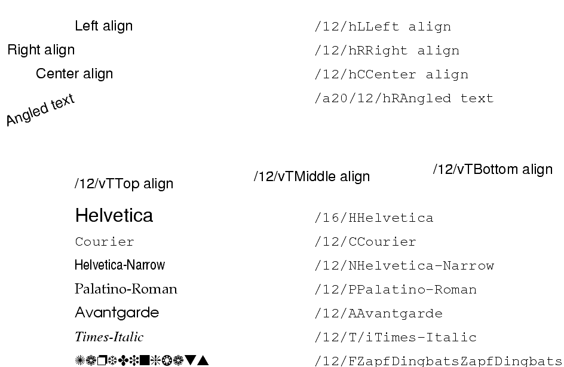

| PyChart |
| PyChart |
A text string may contain escape characters that control its
appearance. The escape sequences all start with the letter
``/''. Thus, to display ``/'' itself, you must write
``//''.
Restrictions:/h,/v, and/amust appear in the beginning of a string.
/add{ between the angle and the number. For example, the below
code shows string ""100"" at a 60-degree angle.
"/a60{}100"
/hA:L" (left alignment), "R" (right alignment), or "C"
(center alignment).
/vA:B"
(bottom), "T" (top), or "M" (middle).
/T
/H:/C:/B:/A:/P:/S:/F{family}:
canvas.show(100, 200, "/F{ZapfDingbat}Funny")
The list of available fonts are the following:
Bookman-Demi Bookman-Light Courier AvantGarde-Book AvantGarde-Demi Helvetica Helvetica-Narrow Palatino NewCenturySchlbk Times Symbol ZapfChancery-MediumItalic ZapfChancery-Medium-Italic ZapfDingbats
/b:/i:/o:/dd:
"/20{}2001 space odyssey!"
/cdd:
//, /{, /}:{ ... }:"{/10{/20Big text} and small text}"
will display "Big Text" using
a 20-point font, and "and small text" using a 10-point font.
n:
Font usage example
Below is the source code that produces the above chart. ../demos/fonttest.py
from pychart import * can = canvas.default_canvas() x, y = (100, 500) def show_text(str): global x, y can.show(x, y, str) can.show(x + 200, y, "/12/C" + font.quotemeta(str)) y -= 20 show_text("/12/hLLeft align") show_text("/12/hRRight align") show_text("/12/hCCenter align") show_text("/a20/12/hRAngled text") def show_textv(str): global x, y can.show(x, y, str) x += 150 y -= 40 x = 100 show_textv("/12/vT//12//vTTop align") show_textv("/12/vM//12//vT/12Middle align") show_textv("/12/vB//12//vT/12Bottom align") y -= 40 x = 100 show_text("/16/HHelvetica") show_text("/12/CCourier") show_text("/12/NHelvetica-Narrow") show_text("/12/PPalatino-Roman") show_text("/12/AAvantgarde") show_text("/12/T/iTimes-Italic") show_text("/12/F{ZapfDingbats}ZapfDingbats")
| PyChart |